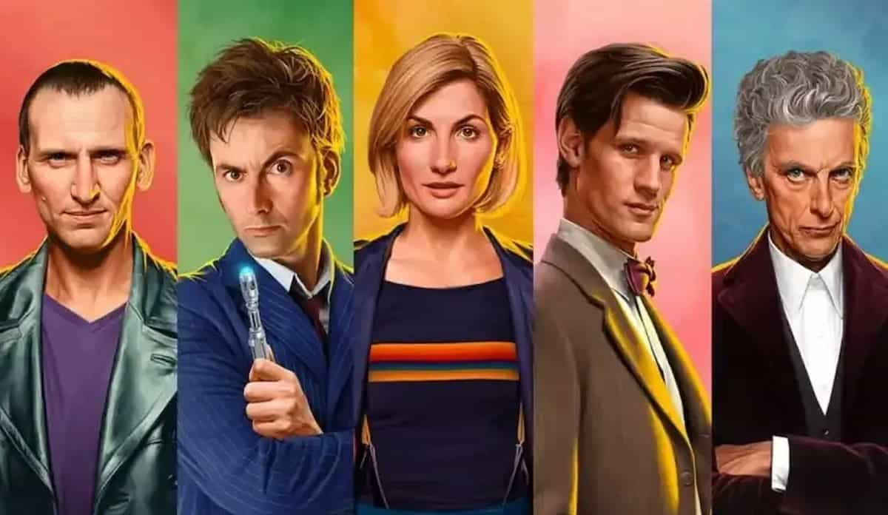

Séries
Doctor Who - a série mais longa do mundo
Doctor Who é muito mais do que uma série de ficção científica. É uma saga épica que se estende por décadas, com histórias que vão desde aventuras emocionantes até profundas reflexões sobre a condição humana e o universo. Ao longo dos anos, a série acumulou um vasto universo de personagens, alienígenas e planetas, criando uma tapeçaria narrativa rica e cativante.
O coração pulsante de Doctor Who é o próprio Doutor, um Senhor do Tempo com uma personalidade vibrante, inteligência afiada e um coração do tamanho do universo. Interpretado por uma série de atores talentosos ao longo dos anos, cada encarnação do Doutor traz uma nova camada de profundidade e complexidade à série, garantindo que ele seja um dos personagens mais amados e icônicos da televisão.
Uma das características mais emocionantes de Doctor Who é a capacidade do Doutor de viajar pelo tempo e espaço em sua icônica TARDIS. De uma visita ao passado da Terra até aventuras em planetas alienígenas distantes, cada episódio oferece uma nova e emocionante perspectiva sobre o universo e suas maravilhas.
Para os fãs de Doctor Who, o evento "The Day of the Doctor" é um marco na história da série. Este especial de 50 anos reuniu várias encarnações do Doutor, incluindo o 10º (David Tennant) e o 11º (Matt Smith), em uma aventura épica que celebrou o legado da série e trouxe revelações impactantes sobre a Guerra do Tempo.
Por fim, Doctor Who não é apenas uma série - é uma comunidade global de fãs apaixonados e dedicados que se reúnem para celebrar sua paixão pelo Doutor e suas aventuras. Desde convenções até grupos de discussão online, fazer parte da comunidade de Doctor Who é como fazer parte de uma família intergaláctica.
Em resumo, assistir Doctor Who não é apenas uma experiência - é uma jornada. É uma jornada pelo tempo, pelo espaço e pela imaginação, que promete emocionar, inspirar e desafiar os espectadores de todas as idades. Então, se você está pronto para embarcar em uma aventura épica que transcende o tempo e o espaço, pegue sua chave de fenda sônica e embarque na TARDIS para uma experiência que você nunca esquecerá.
Novidades da semana